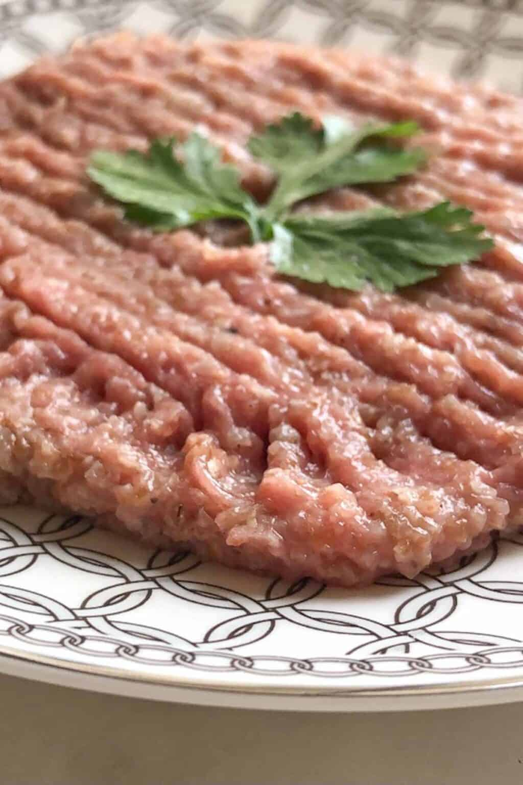

Raw kibbeh nayeh is a savory dish of raw beef, olive oil,bulgur wheat, and seasonings

Ingredients
Raw beef, raw lamb, or raw veal meat:
Fine bulgur wheat
Onion
Allspice
Lebanese seven spices
White pepper
Ground nutmeg
Extra virgin olive oil
Preparation
The first thing in making kibbeh nayeh is to prepare
the bulgar wheat. Soak the fine bulgar wheat in water for
40 minutes to 1 hour.
Drain the bulgar wheat. The bulgar should be
soft when ready. Peel and quarter the onion.
Split the meat into three batches.
Ground the first two in a food processor and
place them in a large bowl.
Put the third batch in the food processor
along with the raw onion and spices and process.
Add this onion mixture to the rest of the ground meat.
Add the bulgur to the meat and start kneading
the mixture with your hands until everything is mixed
together (it takes around 5-7 minutes so keep mixing).
If you feel the mixture needs it, place your hands in a
bowl of cold water and then mix again.
Once everything is combined, shape the mixture
into a large ball. Move it to the serving dish and
start patting it down until it covers the entire
serving plate.
Use a fork to make lines across the kibbeh nayeh.
Drizzle with olive oil. Decorate with greens or mint.